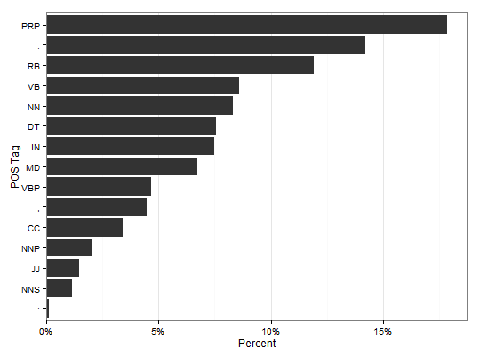

tag_pos(text.var, cores = parallel::detectCores() - 1, parallel = ifelse(cores > 2, TRUE, FALSE), element.chunks = floor(2000 * (23.5/mean(sapply(text.var, nchar), na.rm = TRUE))))
parallel = TRUE. Default
is available cores minus one.TRUE attempts to run the function on
multiple cores. Note that this may not mean a speed boost if you have one
core or if the data set is smaller as the cluster takes time to create. The
function will not enable parallel unless the length of the text is sufficient
(calculated using element chunks and length of text.var).lapply and size is kept within a tolerance
because of memory allocation in the tagging process with Java.A wrapper for NLP and openNLP to easily tag text with parts of speech.
(x <- tag_pos("I need $54 to go to the movies."))Not using parallel process to tag.[1] "I/PRP need/VBP $/$ 54/CD to/TO go/VB to/TO the/DT movies/NNS ./."c(x) ## The true structure of a `tag_pos` object[[1]] PRP VBP $ CD TO VB TO DT NNS . "I" "need" "$" "54" "to" "go" "to" "the" "movies" "."(out1 <- tag_pos(sam_i_am))Not using parallel process to tag.1. I/PRP am/VBP Sam/NNP 2. Sam/NNP I/PRP am/VBP 3. NA 4. That/DT Sam-I-am/NNP !/. 5. That/DT Sam-I-am/NNP !/. . . . 165. Say/VB !/. I/PRP will/MD eat/VB them/PRP anywhere/RB !/. 166. I/PRP do/VBP so/RB like/IN 167. green/JJ eggs/NNS and/CC ham/NN !/. 168. Thank/VB you/PRP !/. 169. Thank/VB you/PRP ,/, Sam-I-am/NNP !/.as_tags(out1)[1] "I/PRP am/VBP Sam/NNP" [2] "Sam/NNP I/PRP am/VBP" [3] NA [4] "That/DT Sam-I-am/NNP !/." [5] "That/DT Sam-I-am/NNP !/." [6] "I/PRP do/VBP not/RB like/VB that/DT Sam-I-am/NNP !/." [7] NA [8] "Do/VBP you/PRP like/VB" [9] "green/JJ eggs/NNS and/CC ham/NN ?/." [10] "I/PRP do/VBP not/RB like/VB them/PRP ,/, Sam-I-am/NNP ./." [11] "I/PRP do/VBP not/RB like/VB" [12] "green/JJ eggs/NNS and/CC ham/NN ./." [13] NA [14] "Would/MD you/PRP like/VB them/PRP" [15] "here/RB or/CC there/RB ?/." [16] NA [17] "I/PRP would/MD not/RB like/VB them/PRP" [18] "here/RB or/CC there/RB ./." [19] "I/PRP would/MD not/RB like/VB them/PRP anywhere/RB ./." [20] NA [21] "I/PRP do/VBP not/RB like/VB" [22] "green/JJ eggs/NNS and/CC ham/NN ./." [23] "I/PRP do/VBP not/RB like/VB them/PRP ,/, Sam-I-am/NNP ./." [24] NA [25] "Would/MD you/PRP like/VB them/PRP in/IN a/DT house/NN ?/." [26] "Would/MD you/PRP like/VB them/PRP with/IN a/DT mouse/NN ?/." [27] NA [28] "I/PRP do/VBP not/RB like/VB them/PRP" [29] "in/IN a/DT house/NN ./." [30] "I/PRP do/VBP not/RB like/VB them/PRP" [31] "with/IN a/DT mouse/NN ./." [32] "I/PRP do/VBP not/RB like/VB them/PRP" [33] "here/RB or/CC there/RB ./." [34] "I/PRP do/VBP not/RB like/VB them/PRP" [35] "anywhere/RB ./." [36] "I/PRP do/VBP not/RB like/VB" [37] "green/JJ eggs/NNS and/CC ham/NN ./." [38] "I/PRP do/VBP not/RB like/VB them/PRP ,/," [39] "Sam-I-am/NNP ./." [40] NA [41] "Would/MD you/PRP eat/VB them/PRP" [42] "in/IN a/DT box/NN ?/." [43] "Would/MD you/PRP eat/VB them/PRP" [44] "with/IN a/DT fox/NN ?/." [45] NA [46] "Not/RB in/IN a/DT box/NN ./." [47] "Not/RB with/IN a/DT fox/NN ./." [48] "Not/RB in/IN a/DT house/NN ./." [49] "Not/RB with/IN a/DT mouse/NN ./." [50] "I/PRP would/MD not/RB eat/VB them/PRP" [51] "here/RB or/CC there/RB ./." [52] "I/PRP would/MD not/RB eat/VB them/PRP anywhere/RB ./." [53] "I/PRP would/MD not/RB eat/VB green/JJ eggs/NNS and/CC ham/NN ./." [54] "I/PRP do/VBP not/RB like/VB them/PRP ,/, Sam-I-am/NNP ./." [55] NA [56] "Would/MD you/PRP ?/. Could/MD you/PRP ?/. In/IN a/DT car/NN ?/." [57] "Eat/NNP them/PRP !/. Eat/NNP them/PRP !/. Here/RB they/PRP are/VBP ./." [58] "I/PRP would/MD not/RB ,/, could/MD not/RB ,/, in/IN a/DT car/NN ./." [59] NA [60] "You/PRP may/MD like/VB them/PRP ./. You/PRP will/MD see/VB ./." [61] "You/PRP may/MD like/VB them/PRP in/IN a/DT tree/NN !/." [62] NA [63] "I/PRP would/MD not/RB ,/, could/MD not/RB in/IN a/DT tree/NN ./." [64] "Not/RB in/IN a/DT car/NN !/. You/PRP let/VB me/PRP be/VB ./." [65] NA [66] "I/PRP do/VBP not/RB like/VB them/PRP in/IN a/DT box/NN ./." [67] "I/PRP do/VBP not/RB like/VB them/PRP with/IN a/DT fox/NN ./." [68] "I/PRP do/VBP not/RB like/VB them/PRP in/IN a/DT house/NN ./." [69] "I/PRP do/VBP not/RB like/VB them/PRP with/IN a/DT mouse/NN ./." [70] "I/PRP do/VBP not/RB like/VB them/PRP here/RB or/CC there/RB ./." [71] "I/PRP do/VBP not/RB like/VB them/PRP anywhere/RB ./." [72] "I/PRP do/VBP not/RB like/VB green/JJ eggs/NNS and/CC ham/NN ./." [73] "I/PRP do/VBP not/RB like/VB them/PRP ,/, Sam-I-am/NNP ./." [74] NA [75] "A/DT train/NN !/. A/DT train/NN !/." [76] "A/DT train/NN !/. A/DT train/NN !/." [77] "Could/MD you/PRP ,/, would/MD you/PRP ,/," [78] "on/IN a/DT train/NN ?/." [79] NA [80] "Not/RB in/IN a/DT train/NN !/. Not/RB in/IN a/DT tree/NN !/." [81] "Not/RB in/IN a/DT car/NN !/. Sam/NNP !/. Let/VB me/PRP be/VB !/." [82] NA [83] "I/PRP would/MD not/RB ,/, could/MD not/RB ,/, in/IN a/DT box/NN ./." [84] "I/PRP could/MD not/RB ,/, would/MD not/RB ,/, with/IN a/DT fox/NN ./." [85] "I/PRP will/MD not/RB eat/VB them/PRP with/IN a/DT mouse/NN ./." [86] "I/PRP will/MD not/RB eat/VB them/PRP in/IN a/DT house/NN ./." [87] "I/PRP will/MD not/RB eat/VB them/PRP here/RB or/CC there/RB ./." [88] "I/PRP will/MD not/RB eat/VB them/PRP anywhere/RB ./." [89] "I/PRP do/VBP not/RB like/VB green/JJ eggs/NNS and/CC spam/NN ./." [90] "I/PRP do/VBP not/RB like/VB them/PRP ,/, Sam-I-am/NNP ./." [91] NA [92] "Say/VB !/. In/IN the/DT dark/NN ?/." [93] "Here/RB in/IN the/DT dark/NN !/." [94] "Would/MD you/PRP ,/, could/MD you/PRP ,/," [95] "in/IN the/DT dark/NN ?/." [96] NA [97] "I/PRP would/MD not/RB ,/, could/MD not/RB ,/, in/IN the/DT dark/NN ./." [98] NA [99] "Would/MD you/PRP ,/, could/MD you/PRP ,/, in/IN the/DT rain/NN ?/." [100] NA [101] "I/PRP would/MD not/RB ,/, could/MD not/RB ,/, in/IN the/DT rain/NN ./." [102] "Not/RB in/IN the/DT dark/JJ ./. Not/RB on/IN a/DT train/NN ./." [103] "Not/RB in/IN a/DT car/NN ./. Not/RB in/IN a/DT tree/NN ./." [104] "I/PRP do/VBP not/RB like/VB them/PRP ,/, Sam/NNP ,/, you/PRP see/VBP ./." [105] "Not/RB in/IN a/DT house/NN ./. Not/RB in/IN a/DT box/NN ./." [106] "Not/RB with/IN a/DT mouse/NN ./. Not/RB with/IN a/DT fox/NN ./." [107] "I/PRP will/MD not/RB eat/VB them/PRP here/RB or/CC there/RB ./." [108] "I/PRP do/VBP not/RB like/VB them/PRP anywhere/RB !/." [109] NA [110] "You/PRP do/VBP not/RB like/VB" [111] "green/JJ eggs/NNS and/CC ham/NN ?/." [112] "I/PRP do/VBP not/RB like/VB them/PRP ,/," [113] "Sam-I-am/NNP ./." [114] NA [115] "Could/MD you/PRP ,/, would/MD you/PRP ,/," [116] "with/IN a/DT goat/NN ?/." [117] NA [118] "I/PRP would/MD not/RB ,/, could/MD not/RB ,/," [119] "with/IN a/DT goat/NN !/." [120] NA [121] "Would/MD you/PRP ,/, could/MD you/PRP ,/," [122] "on/IN a/DT boat/NN ?/." [123] NA [124] "I/PRP could/MD not/RB ,/, would/MD not/RB ,/," [125] "on/IN a/DT boat/NN ./." [126] "I/PRP will/MD not/RB ,/, will/MD not/RB ,/," [127] "with/IN a/DT goat/NN ./." [128] NA [129] "I/PRP will/MD not/RB eat/VB them/PRP in/IN the/DT rain/NN ./." [130] "I/PRP will/MD not/RB eat/VB them/PRP on/IN a/DT train/NN ./." [131] "Not/RB in/IN the/DT dark/NN !/. Not/RB in/IN a/DT tree/NN !/." [132] "Not/RB in/IN a/DT car/NN !/. You/PRP let/VB me/PRP be/VB !/." [133] "I/PRP do/VBP not/RB like/VB them/PRP in/IN a/DT box/NN ./." [134] "I/PRP do/VBP not/RB like/VB them/PRP with/IN a/DT fox/NN ./." [135] "I/PRP will/MD not/RB eat/VB them/PRP in/IN a/DT house/NN ./." [136] "I/PRP do/VBP not/RB like/VB them/PRP with/IN a/DT mouse/NN ./." [137] "I/PRP do/VBP not/RB like/VB them/PRP here/RB or/CC there/RB ./." [138] "I/PRP do/VBP not/RB like/VB them/PRP anywhere/RB !/." [139] "I/PRP do/VBP not/RB like/VB green/JJ eggs/NNS and/CC ham/NN !/." [140] "I/PRP do/VBP not/RB like/VB them/PRP ,/, Sam-I-am/NNP ./." [141] NA [142] NA [143] "You/PRP do/VBP not/RB like/VB them/PRP ./. So/IN you/PRP say/VBP ./." [144] "Try/VB them/PRP !/. Try/VB them/PRP !/. And/CC you/PRP may/MD ./." [145] "Try/VB them/PRP and/CC you/PRP may/MD ,/, I/PRP say/VBP ./." [146] NA [147] "Sam/NNP !/. If/IN you/PRP will/MD let/VB me/PRP be/VB ,/," [148] "I/PRP will/MD try/VB them/PRP ./. You/PRP will/MD see/VB ./." [149] NA [150] "Say/VB !/. I/PRP like/IN green/JJ eggs/NNS and/CC ham/NN !/." [151] "I/PRP do/VBP !/. I/PRP like/IN them/PRP ,/, Sam-I-am/NNP !/." [152] "And/CC I/PRP would/MD eat/VB them/PRP in/IN a/DT boat/NN ./." [153] "And/CC I/PRP would/MD eat/VB them/PRP with/IN a/DT goat/NN .../:" [154] NA [155] "And/CC I/PRP will/MD eat/VB them/PRP in/IN the/DT rain/NN ./." [156] "And/CC in/IN the/DT dark/NN ./. And/CC on/IN a/DT train/NN ./." [157] "And/CC in/IN a/DT car/NN ./. And/CC in/IN a/DT tree/NN ./." [158] "They/PRP are/VBP so/RB good/JJ ,/, so/RB good/JJ ,/, you/PRP see/VBP !/." [159] NA [160] "So/IN I/PRP will/MD eat/VB them/PRP in/IN a/DT box/NN ./." [161] "And/CC I/PRP will/MD eat/VB them/PRP with/IN a/DT fox/NN ./." [162] "And/CC I/PRP will/MD eat/VB them/PRP in/IN a/DT house/NN ./." [163] "And/CC I/PRP will/MD eat/VB them/PRP with/IN a/DT mouse/NN ./." [164] "And/CC I/PRP will/MD eat/VB them/PRP here/RB and/CC there/RB ./." [165] "Say/VB !/. I/PRP will/MD eat/VB them/PRP anywhere/RB !/." [166] "I/PRP do/VBP so/RB like/IN" [167] "green/JJ eggs/NNS and/CC ham/NN !/." [168] "Thank/VB you/PRP !/." [169] "Thank/VB you/PRP ,/, Sam-I-am/NNP !/."count_pos(out1)Error in `[.data.frame`(x, i, j): could not find function ":="plot(out1) ## <strong>Not run</strong>: # (out2 <- tag_pos(presidential_debates_2012$dialogue)) # ~40 sec run time # count_pos(out2) # count_pos(out2, by = presidential_debates_2012$person) # with(presidential_debates_2012, count_pos(out2, by = list(person, time))) # plot(out2) # ## <strong>End(Not run)</strong>